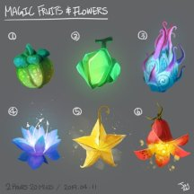

- 1 уровень, преобразование
- Время накладывания: 1 действие
- Дистанция: Касание
- Компоненты: В, С, М (ветка омелы)
- Длительность: Мгновенная
- Классы: друид, следопыт
В вашей руке появляются до десяти ягод, наполненных магией. Любое существо может действием съесть одну ягоду. Это восстанавливает 1 хит, и ягода настолько питательна, что насыщает существо на весь день.
Ягоды теряют силу, если их не съесть через 24 часа после создания.
Чудо-ягоды — Заклинания
Чудо-ягоды [Goodberry]PH14 PH24
Галерея

Комментарии
Врагу разорвало голову появившейся арбузной бахчой.
RAI это заклинание тоже очевидно не имело замысла боевого применения, потому что при таком допущении за одну только ячейку 1 уровня можно сразу же поднять союзника аж 10 раз за день.
Так что мастер вполне может не дать возможность такого допущения.
не будь это спорным вопросом, он бы не вызвал столько вопросов и не был бы задан другими матерами прямо организаторам.
Действительно, они дали положительный ответ.
А что будет если я призову ядовитую ягоду? Допустим первые 24 часа яд будет обезврежен исцеляющей магией ягоды, но что потом? Яд из ягоды просто пропадёт или ягода останется ядовитой как оригинал?
1 такую можно скормить бехолдеру и тот более не сможет ничего есть в течение дня. Ток через силу
Или увеличить ягоду 1 такую и целую толпу лишить голода. Сварив компот. Ягода в любом случае как ее частицы равномерно распределятся и можно в течение 24 часов в любое время утолить голод 1 глотком
Или эт новый абуз ?
К тому же вопрос еды в ДнД 5-ой редакции не играет практически никакой роли. Как вариант, предыстория "Чужеземец" позволяет по-сути без броска кубика и чего-нибудь подобного накормить всё тот же отряд (хоть и из 6-ти человек), при наличии вокруг соответствующих ресурсов
Надеюсь не малина , я не люблю Малину..........
>RAW нет, потому что написано, что именно само существо может действием съесть ягоду, а недееспособное существо действий совершать не может. В случае того же зелья лечения прямым текстом написано, зелье выпивается или заливается в рот другому действием.
RAI это заклинание тоже очевидно не имело замысла боевого применения, потому что при таком допущении за одну только ячейку 1 уровня можно сразу же поднять союзника аж 10 раз за день.
Так что мастер вполне может не дать возможность такого допущения.
Черта Посвящённый в магию позволяет один раз наложить заклинание бесплатно, следовательно, на первом уровне мы получаем три каста чудо-ягод в день. Ягоды существуют сутки, значит, у вас может быть их шесть порций - три сегодня, три заготовленных со вчерашнего вечера, суммарно 60 штук. Каждая ягода лечит на 4: мы уже знаем, что Поборник жизни так работает, в его описании это сказано прямо.
На ПЕРВОМ уровне наш персонаж может лечить пати суммарно на 240 хитов в день. Да, это все наши ресурсы суммарно, причём накопленные за два дня; да, в бою этот хил почти бесполезен - но между боями вы можете заливать всей пати полный столб здоровья, в каждую, КАЖДУЮ битву вы будете вступать на фулл ХП. И что особенно приятно - это комбо совершенно не зависит от ваших статов. На втором уровне вы можете спокойно мультикласснуться, скажем, в волшебника, и всю оставшуюся игру пройти чисто на нём. Волшебник в тяжёлых доспехах и с сотнями хитов запаски в кармане - это внушает.
В новой редакции комбо убрали, Поборник жизни работает исключительно в тот же ход, когда вы накладываете заклинание. Так что если вы играете по старым правилам - не премините воспользоваться этой вкусняшкой, она того стоит.
Ломать все нормы женевской конвенции, терроризируя врагов пытками через переедание - легко!
Навсегда забить болт на любые потуги мастера устроить вам "тот самый выживач" - изи!
Найти комбу, ломающую лечение в бесконечные цифры - дайте два!